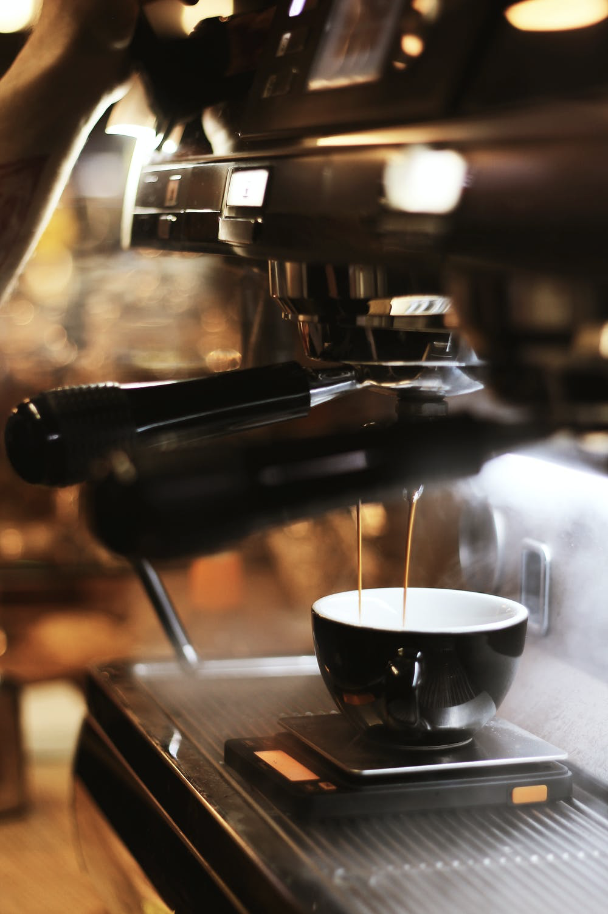
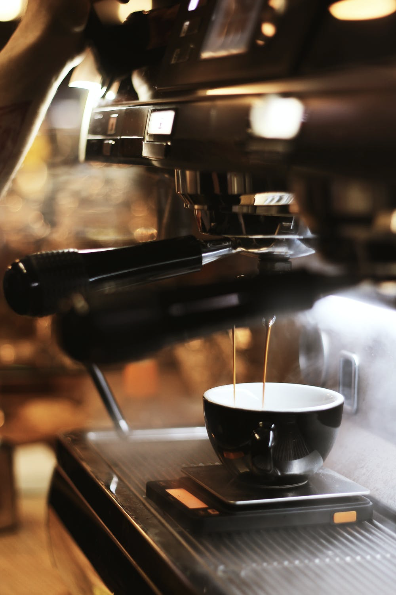
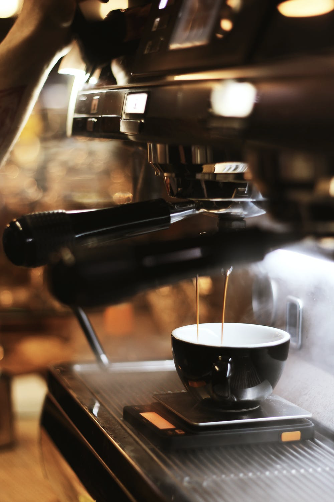

About Us
Coffeeroasters began its journey of exotic discovery in 1999, highlighting stories of coffee from around the world. We have since been dedicated to bring the perfect cup - from bean to brew - in every shipment.
 

Coffeeroasters began its journey of exotic discovery in 1999, highlighting stories of coffee from around the world. We have since been dedicated to bring the perfect cup - from bean to brew - in every shipment.


We’re built on a simple mission and a commitment to doing good along the way.
We want to make it easy for you to discover and brew the world’s best coffee at
home. It all starts at the source. To locate the specific lots we want to purchase,
we travel nearly 60 days a year trying to understand the challenges and initiatives, and
invest in coffee plant science. Curating only the finest blends, we
roast each lot to highlight tasting profiles distinctive to their native growing region.
Although we work with growers who pay close attention to all stages of harvest
and processing, we employ, on our end, a rigorous quality control program to
avoid over-roasting or baking the coffee dry. Every bag of coffee is tagged with a
roast date and batch number. Our goal is to roast consistent, user-friendly
coffee, so that brewing is easy and enjoyable.